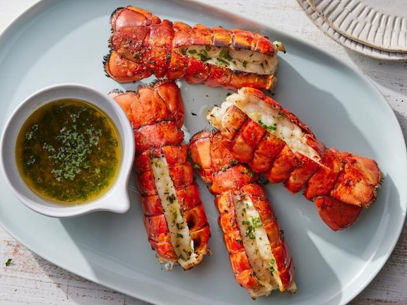

The Best Grilled Lobster Tails

Description:
Grilled lobster tails are the ultimate summer extravagance, so you'll
want to make sure to treat them right. This method assures tender and
juicy lobster meat cradled in a shell brimming with garlicky, herby
butter. We start with frozen tails because that's what's most reliably
available, but if you have access to fresh, by all means use them.
Ingredients:
- Olive oil, for brushing
- 1 stick (8 tablespoons) unsalted butter
- 2 cloves garlic, very finely chopped or grated
- 1 teaspoon grated lemon zest plus 2 tablespoons juice
- 1/4 cup chopped fresh Italian parsley
- 2 tablespoons chopped fresh chives
- Pinch cayenne pepper
- Four 8-ounce frozen lobster tails, thawed
- Kosher salt
Steps:
Special equipment:
8 wooden or metal skewers, at least 12 inches long
- If using wooden skewers, soak them in water for 30 minutes before grilling.
- Prepare a grill for medium-high heat and brush the grill grates with oil.
- Melt the butter in a small saucepan over medium-low heat. Add the garlic
and cook until sizzling, about 30 seconds. Remove and stir in the lemon zest
and juice. Let cool slightly, about 5 minutes, then stir in the parsley,
chives and cayenne. Keep warm.
- Using a pair of kitchen shears, cut lengthwise through the top of the
lobster shells, then pull the shells apart slightly to expose the lobster
meat. Use a knife to cut almost but not completely through the tails and
push the cut sides open slightly. Insert a skewer lengthwise through each
side of the tails to keep them from curling during grilling. Brush all
over with olive oil and sprinkle lightly with salt.
- Grill the tails meat-side down until the shells begin to turn red all over,
4 to 5 minutes. Flip, then brush the meat generously with the butter. Cover
with the lid and grill until the meat has just turned white, about 3 minutes.
Flip once more, brush again with the butter and grill until the shells are
bright red and the meat is just cooked through, about 1 minute more.
- Remove the skewers and serve with any extra warm butter on the side.